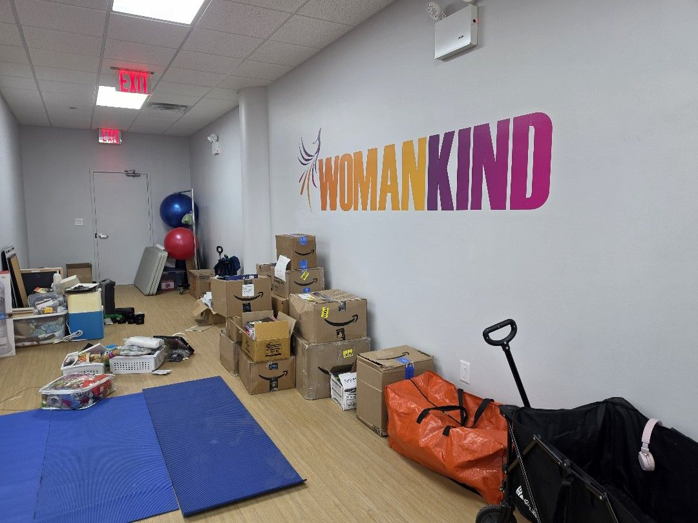
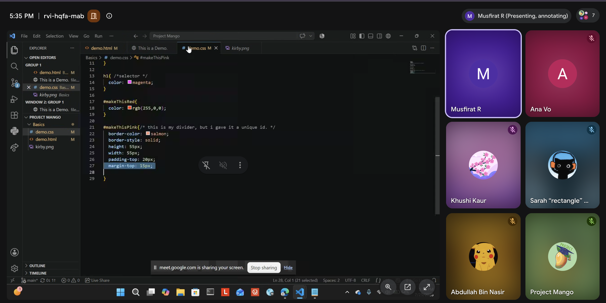
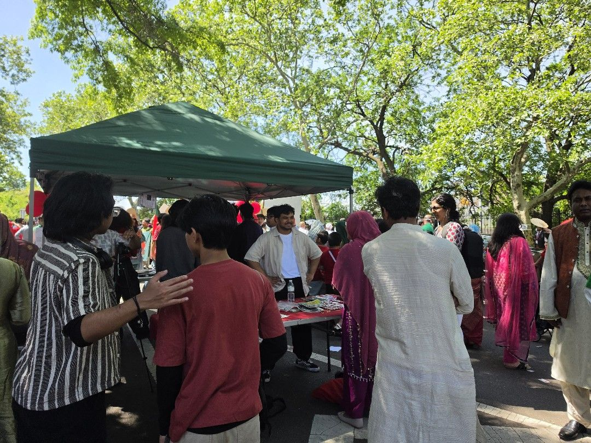

Welcome to Project Mango! We are a youth-led organization dedicated to empower and drive passion in students by fostering a supportive, collaborative educational community where peers share knowledge, build confidence, and achieve academic growth together.
You may be thinking--why a mango? Mangoes are widely regarded as symbols of love, prosperity, friendship, and community building. Our initiatives seek to bridge gaps within our community, spreading positivity and love to help each child prosper in their future endeavors.
Developed by students who were met with a lack of educational resources, and have also struggled to find their own, unique paths, we aim to support students early on in their academic careers so that they have the tools they need for success.

Womankind collaboration
Project Mango had the wonderful opportunity to collaborate with Womankind NYC on a school supply drive, serving over 120 underserved students by providing backpacks filled with resources. In total, we gave away over $500 worth of supplies.

Summer of code
Project Mango's Summer of Code is a 2 month long program that runs on weekends over the summer. Students learn essential skills in HTML and CSS, getting a headstart in developing their own personal websites. Summer of Code runs for students of all ages, all over the world.

FBW Youth parade
On May 17th, Project Mango was honored to table at the annual Bangladesh Day Parade hosted by FBW: Youth Development. The event welcomed thousands of participants. Despite coming from various backgrounds, we were able to engage with the Bangladeshi Jackson Heights community by offering facepainting and teaching how to make origami paper stars for people of all ages.